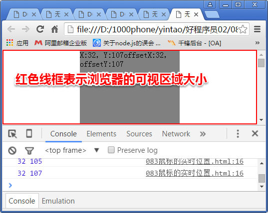

什么是事件驱动模型？
由事件的发生来触发程序的执行
都有哪些事件？
onclick 单击
ondblclick 双击
onmouseover 鼠标划入
onmouseout 鼠标划出
onfocus 获得焦点
onblur 失去焦点
onload 加载完成
onkeydown 键盘被按下
onkeypress 键盘按下并松开
onkeyup 键盘松开
onscroll 窗口滚动
onresize 改变大小
onmousemove 鼠标的移动
onchange 内容被改变并失去焦点
Event对象是干嘛的？
有了Event，可以处理任何跟鼠标或键盘相关的信息
比如： 计算鼠标的位置，计算用户按下了哪个键？
怎么得到Event对象？
xxx.onclick = function(evt){
//use evt ...........
}
button属性代表什么？
代表了事件发生时，鼠标哪个键被按下
button==0 左键
button==1 滚轮
button==2 右键
clientX和clientY
鼠标在 浏览器的可视区域 的坐标

offsetX和offsetY
鼠标在 当前事件触发的元素上的坐标
计算鼠标的页面绝对位置
var x = e.clientX + document.body.scrollLeft||document.documentElement.scrollLeft;
var y = e.clientY + document.body.scrollTop||document.documentElement.scrollTop;
和键盘相关的keyCode以及组合键
keyCode 键盘的ascii码
兼容写法 which
keypress和 keydown的 区别
在keypress中，对于设备控制键或组合键，例如capsLock、alt、ctrl 不会触发该事件
在keydown中，会对所有键都会触发事件，并有对应的虚拟码
在keypress中，对于alt和ctrl这样的组合键，需要通过
ctrlKey altKey 的值来判断
事件流是什么东西？
事件是可以流动的，它在触发时，默认情况下，会将事件向父元素进行传播，导致外层也被依次触发，直到页面的最顶层元素。 事件函数的执行顺序按照事件传播的顺序进行。
我们管这种现象叫做： 事件冒泡
什么叫冒泡

好处在哪？ (事件委托机制)
把元素触发事件时要执行的动作委托给父元素来执行
注： 通过event.target属性，我们可以找到事件触发的原始对象。
坏处在哪？
事件冒泡给父元素，会导致一些不该触发的事件被触发了
怎么阻止事件传播？
event.stopPropagation()
event.cancelBubble = true;
如何阻止右键菜单
document.oncontextmenu = function(e){
e = e || event;
e.preventDefault ? e.preventDefault() : e.returnValue = false;
}
浏览器的默认行为有哪些？ 能阻止吗？
右键弹出菜单
超链接的页面跳转
按钮在表单中的自动提交
e.preventDefault ? e.preventDefault() : e.returnValue = false;
拖拽原理
ele.onmousedown = function(){
document.onmousemove = function(){
//..........
}
}
document.onmouseup = function(){
document.onmousemove = null;
}
事件捕获又是什么东西？
与事件冒泡的执行顺序相反的事件特性
从最顶层父元素依次向子元素
另外一种绑定事件的方法？
addEventListener(eventtype, func, isCapture)
参数1 ： 事件的类型，注意 不加 on
参数2 ： 事件需要绑定的函数
参数3 ： 是否支持捕获，默认为false，即冒泡
可以给同一个元素绑定多个事件函数!!
多个事件的执行顺序和事件绑定的顺序一致